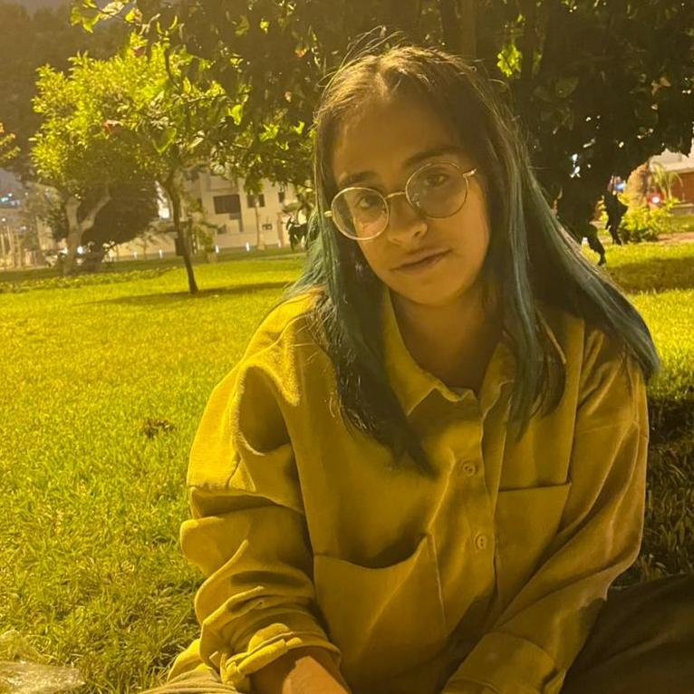

Hello! My name is GÉNESIS LEÓN. I'm an UI programmer, political science student and data activist. Here I show some projects I did, my professional profile and try to explain why I do what I do.
The meaning of politics is freedom. Politics is always the concern for the world, without which those who care and are politicians do not consider that life deserves to be lived.
— Hannah Arendt